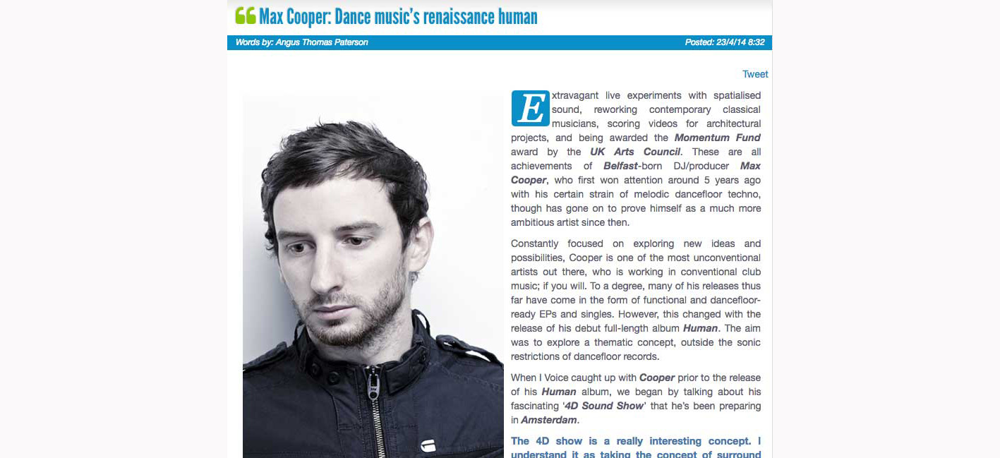
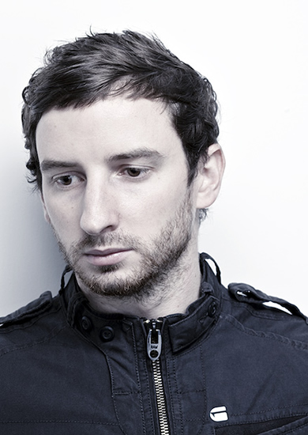

Max Cooper: Dance Music’s Renaissance Human
{kind=link}

Extravagant live experiments with spatialised sound, reworking contemporary classical musicians, scoring videos for architectural projects, and being awarded the Momentum Fund award by the UK Arts Council. These are all achievements of Belfast-born DJ/producer Max Cooper, who first won attention around 5 years ago with his certain strain of melodic dancefloor techno, though has gone on to prove himself as a much more ambitious artist since then.
{kind=link}

Constantly focused on exploring new ideas and possibilities, Cooper is one of the most unconventional artists out there, who is working in conventional club music; if you will. To a degree, many of his releases thus far have come in the form of functional and dancefloor-ready EPs and singles. However, this changed with the release of his debut full-length album Human. The aim was to explore a thematic concept, outside the sonic restrictions of dancefloor records.
When I Voice caught up with Cooper prior to the release of his Human album, we began by talking about his fascinating ‘4D Sound Show’ that he’s been preparing in Amsterdam.
The 4D show is a really interesting concept. I understand it as taking the concept of surround sound, and bringing it into a live electronic music setting?
It’s not surround sound, as that is traditionally where you’ve got a few speakers set around the room, where rather than just left-right panning, it can also give you sounds from behind. That’s surround sound, but this is full three-dimensional sound; so the sounds can come from the middle of the room as well as the edges, from anywhere. You can walk past the sounds. You can actually walk towards the sound, find it, walk past it and then find another sound. You can actually interact with the sounds and walk through them; you’re actually exploring a three-dimensional array of speakers that can give the impression a sound is coming from any point in space, essentially. The sources don’t have to even be the speakers; they don’t have to sound like they are the speakers, so it’s more of an immersive sound environment. They call it ‘4D sound’ because the sound is moving in time as well, you can actually program the sounds to fly around and change shape, implode or explode or whatever. They call it 4D to drive home the idea that time is also one of the dimensions being played with, not just the position of sounds.
I’ve got a bit of a problem with having too many ideas and too many projects. There are so many interesting things going on out there...How do you deploy that as a performing artist, and turn it into a cohesive experience for the audience?
It takes a bit of practice, and a lot of thought as to do it… Part of the problem is you have to essentially take every piece of music and think about, what if this piece of music was a physical entity that existed in three-dimensional space, as well as time? What would it be and how could I structure it, to make something cohesive? And it needs to be able to work from any position as well, so people in different parts of the room will hear different things, but it still sounds okay. So it adds an extra level of complexity to the music production side of things, but it also opens a lot of doors in terms of what you can achieve and new ways of actually writing the music.
When you’re performing in that context, is there ever a danger of losing control of what you’re presenting to the audience? Does it ever become challenging or unwieldy?
There are definitely points where it is challenging. But that’s part of the fun, as it’s not supposed to be a typical club show. I mean, the first 20 minutes of the show are ambient, there’s no beats really, it’s just sort of exploring the space and getting a feel for what it’s all about. So it’s certainly not a typical club show. But there are elements of that, you can dance to it. It’s funny, the first show I did was a mixture of people who’d normally go to clubs, some people bringing their kids, and other people who normally wouldn’t go to clubs but were just interested in hearing the music. People weren’t sure if they should dance, sit down, walk around or whatever. It was an interesting experiment, both on the performance side as well as the audience and seeing how they responded. Which is a nice thing, it’s nice to have something new like that.
What are your plans for touring it this year?
I’ve only done that one test show so far in Amsterdam, where it’s built. The plan now is there’s a lightweight system being built… the problem is the system in Amsterdam, it weighs two tonnes or something like that, and it’s an absolute nightmare to move it around, to build it up and set it down, because the subs are in the floor, it’s this huge metal structure.
{kind=link}
So at the moment they’re building this lightweight system, which will be ready in time for summertime hopefully. And when that’s ready, that’s when hopefully the touring can begin. The plans are to bring it to London later this summer, and then do another show in Amsterdam, and then hopefully tour some other places. But that’s still getting sorted out at the moment.
You’ve been motivated to work on a lot of different projects over the years that go beyond typical DJ/producer stuff. Are you always on the lookout for these opportunities?
Yeah pretty much. If I find an interesting idea or something that gets me excited, I want to work on it. The problem is that there are way more projects that I have time to work on. So it’s a matter of trying to choose which ones are going to be the most fun and productive.
The idea of unconventional projects also carries across to your new album, as it seems you were informed by a desire to work outside of the structure of typical club records?
I started working on the album maybe 2 to 3 years ago, and from the start I knew what the concept was going to be. It was always my aim to drop the rules and forget about the club thing. Obviously, there are still club tracks on there, and it’s still roughly in a format that I would play to some extent in a club.
But from the start it was me saying, if I happen to make a club track then great, but I’m not going to set out to tick boxes with a big breakdown and a big drop, or whatever else that club tracks often have. It was just a matter of me sitting down and writing music that I wanted to write, just getting on with it and focussing on the musical aspect and breaking as many rules as I could, basically.
The original concept was the human condition. I wanted to take a series of common themes and experiences, and to create an album about them, to try and deliver them musically...
What were your initial ideas in terms of structure and concept?
I had the overall ‘human condition’ concept, and I had several individual concepts as well. It was just a matter of working through those concepts and trying to communicate the ideas. Every track on the album is a different idea, a different comment on people in general. So it was just a matter of thinking about how I could do that, and all under the umbrella of the human condition. So it was a matter of focussing on those concepts, and then trying to deliver them musically.
There is one track called Seething, which is very angry and tense… There’s one track called Automoton, which is about people being deterministic machines, with chopped up vocals and people sounding like machines. There’s one track called Woven Ancestry,which is about how we’re all the product of all of our ancestors, culturally as well as genetically, and representing that concept with old instruments and intertwined melodies, stringing them together in a coherent whole in the same way each person is intertwined with the genetics of their ancestry.
So it was all about this same idea of trying to communicate either a common human feeling, or a human concept in terms of a more objectified scientific idea; trying to make some kind of statement, and then tie that in with making music that’s good to listen to, which fits my musical aesthetic and what I’m into. The tricky bit was after writing all these tracks, sequencing them to fit into a coherent, listenable mix-like album structure. There was a lot of work at the end.
When you first broke through five or so years ago, there was something really distinct about your work, the intersection of the more melodic elements that are almost classical at times, and the harsher electronic elements which are perhaps more techno.
I love modern classical, and I listen to a lot of post-classical and electronica. I like a lot of different music, and I’m always try to fuse as many different genres and ideas that I can. I don’t like sticking to one sound or genre, it’s always trying to fuse different things together and hopefully come up with something interesting. Sometimes it works, and sometimes it doesn’t.
But more specifically, the fusion of the beautufil melodic elements with the really harsh elements, that’s another thing in my music that I always seek to do, to maximise the contrasts. To take two things seemingly incompatible, or from opposite ends of the spectrum, and then just chuck them in together. You often get interesting results. If you fuse the most beautiful thing with the most horrible thing, you get interesting results musically.
What’s really interesting is that you get some emergent properties… I did a mix recently where I fused a beautiful piano piece with this really glitch, mechanical computational music, and it gives both the beautiful and the glitchy music a new life and a new flavour. It’s just very interesting.
I’d always assumed from listening to your music that you were a classically trained musician, but I learned recently that’s not the case.
No not at all. I played the violin for a couple of years as a kid, but was never really into it. I can’t even remember how to read music now. I don’t think you really need it these days, as long as the music makes you feel something; then you can work by trial and error.
If you’re just randomly hammering away at Fruity Loops, Logic, Ableton or whatever you’re using, as long as you can hear or feel something, and you have an opinion on each change, then you can find your way through a hill-climbing exercise, making your way from the bottom to the top, just by fiddling with things.
That’s very much the approach I’ve always employed, it’s more instinctual. Music always had an impact on me, and it’s the only tool I’ve ever needed to write music.
{kind=link}
Title: Human LP
Label: Fields
Tracklist01. Woven Ancestry02. Adrift feat. Kathrin deBoer03. Automaton feat. BRAIDS04. Supine05. Seething06. Numb feat. Kathrin deBoer07. Impacts08. Empyrean09. Apparitions10. Potency11. Awakening
OUT NOW!
LIMITED EDITION GATEFOLD VINYL OR CD
ITUNES